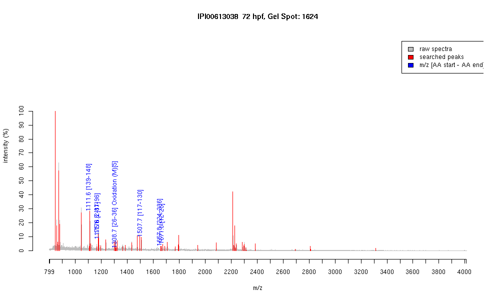

| Name | PREDICTED: similar to muscle-specific creatine kinase isoform 4 |
|---|---|
| MW | 29675.7 |
| PI | 5.94 |
| Mascot Protein Score | 67 |
| Masses (matched / unmatched) | 7 / 58 |

| Peptide | MZ (calc) | MZ (observed) | Error (DA) | Error (PPM) | Start | Stop | Modifications |
|---|---|---|---|---|---|---|---|
| GYALPPHNSR | 1111.5643 | 1111.5624 | -0.0019 | -2 | 139 | 148 | |
| PFGNTHNNFK | 1175.5592 | 1175.5565 | -0.0027 | -2 | 2 | 11 | |
| DLFDPVISDR | 1176.5895 | 1176.5742 | -0.0153 | -13 | 87 | 96 | |
| HNNHMAKVLTK | 1308.6841 | 1308.6636 | -0.0205 | -16 | 26 | 36 | Oxidation (M)[5] |
| GGDDLDPNYVLSSR | 1507.7023 | 1507.6998 | -0.0025 | -2 | 117 | 130 | |
| TFLVWVNEEDHLR | 1657.8333 | 1657.8151 | -0.0182 | -11 | 224 | 236 | |
| LNYSVDEEYPDLSK | 1671.7748 | 1671.7822 | 0.0074 | 4 | 12 | 25 |